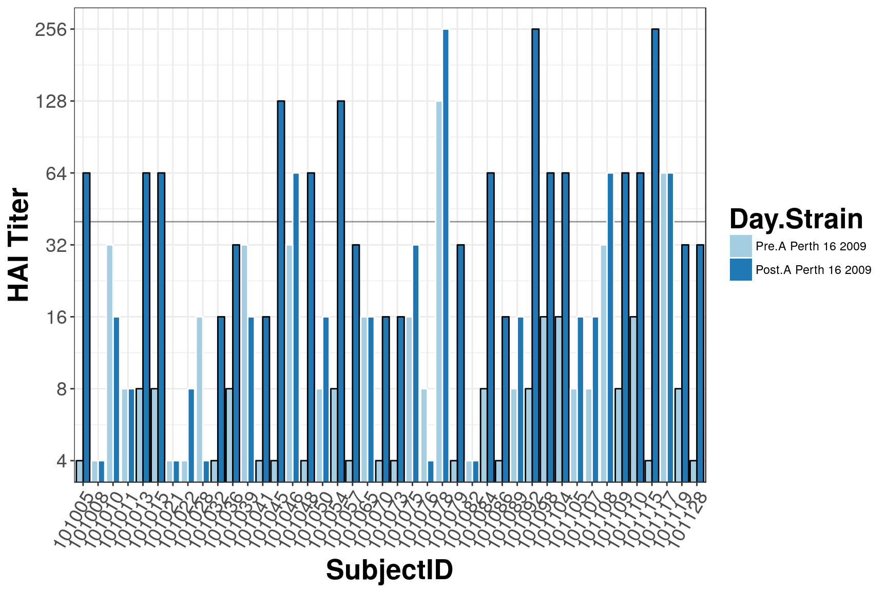
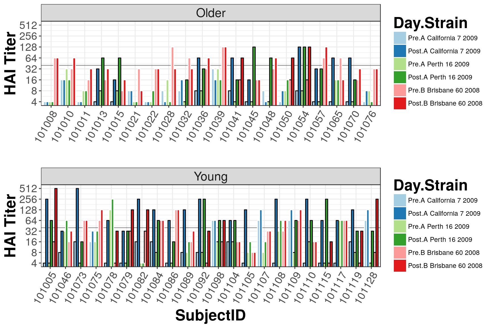
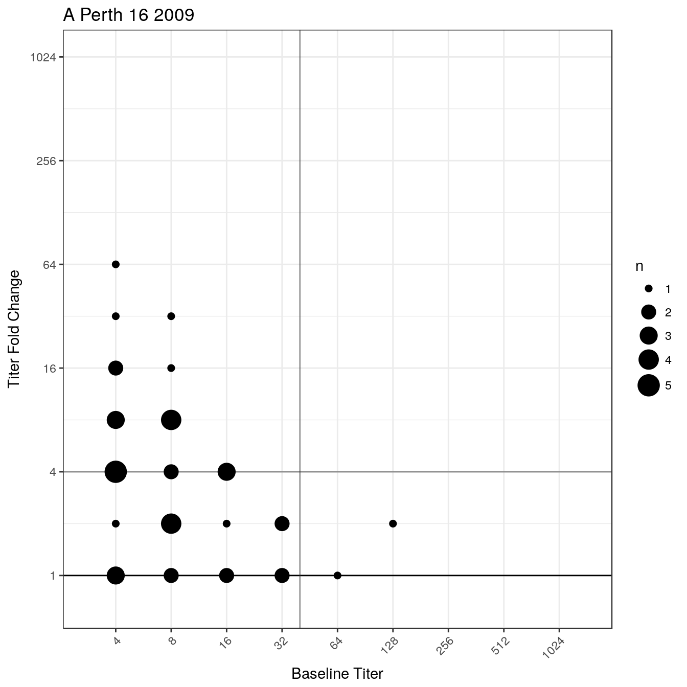
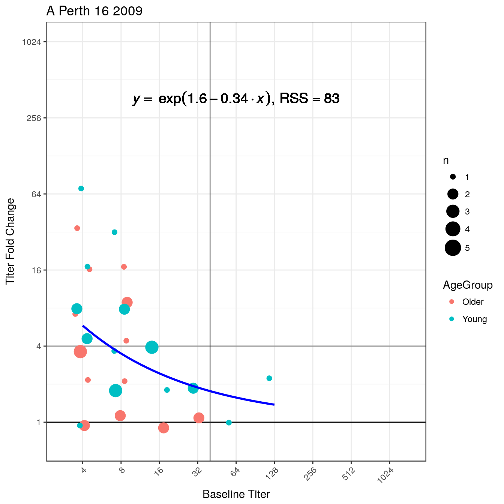

Visualizing Titers
Stefan Avey
2017-05-18
Format titer data
library(titer)
head(Year1_Titers)## SubjectID AgeGroup Strain Pre Post
## 1 101005 Young A California 7 2009 4 256
## 2 101005 Young A Perth 16 2009 4 64
## 3 101005 Young B Brisbane 60 2008 16 512
## 4 101008 Older A California 7 2009 4 4
## 5 101008 Older A Perth 16 2009 4 4
## 6 101008 Older B Brisbane 60 2008 64 64titer_list <- FormatTiters(Year1_Titers)## - Log transforming Pre and Post columns## - Setting any negative log fold changes to 0lapply(titer_list, head)## $`A California 7 2009`
## SubjectID AgeGroup Strain Pre Post FC
## 1 101008 Older A California 7 2009 2 2 0
## 2 101011 Older A California 7 2009 2 2 0
## 3 101022 Older A California 7 2009 2 2 0
## 4 101050 Older A California 7 2009 2 3 1
## 5 101076 Older A California 7 2009 2 3 1
## 6 101015 Older A California 7 2009 2 4 2
##
## $`A Perth 16 2009`
## SubjectID AgeGroup Strain Pre Post FC
## 1 101008 Older A Perth 16 2009 2 2 0
## 2 101021 Older A Perth 16 2009 2 2 0
## 3 101082 Young A Perth 16 2009 2 2 0
## 4 101022 Older A Perth 16 2009 2 3 1
## 5 101032 Older A Perth 16 2009 2 4 2
## 6 101041 Older A Perth 16 2009 2 4 2
##
## $`B Brisbane 60 2008`
## SubjectID AgeGroup Strain Pre Post FC
## 1 101115 Young B Brisbane 60 2008 2 4 2
## 2 101078 Young B Brisbane 60 2008 2 5 3
## 3 101092 Young B Brisbane 60 2008 2 5 3
## 4 101119 Young B Brisbane 60 2008 2 5 3
## 5 101105 Young B Brisbane 60 2008 3 3 0
## 6 101015 Older B Brisbane 60 2008 3 4 1Bar plots
Bar plots can show the raw data, baseline and day 28 titer values for each subject.
## Bar plot of B strain
Barplot(titer_list["A Perth 16 2009"])
## Bar plot of all strains
Barplot(titer_list, groupVar = "AgeGroup")
Bubble Charts
Bubble Charts show the relationship between baseline titer and fold change. In general, a negative slope is observed.
## Bubble Charts for all strains
BubbleChart(titer_list)
## Bubble Chart for B strain
BubbleChart(titer_list["A Perth 16 2009"])
## Add an exponential fit and color by age group
BubbleChart(titer_list["A Perth 16 2009"], fit = "exp",
colorBy = "AgeGroup", eqSize = 5)